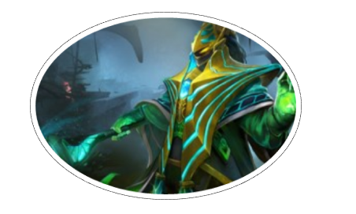

Rubick: The Grand MagusAny mage can cast a spell or two, and a few may even study long enough to become a wizard, but only the most talented are allowed to be recognized as a Magus. Yet as with any sorcerer’s circle, a sense of community has never guaranteed competitive courtesy. Already a renowned duelist and scholar of the grander world of sorcery, it had never occurred to Rubick that he might perhaps be Magus material until he was in the midst of his seventh assassination attempt. As he casually tossed the twelfth of a string of would-be killers from a high balcony, it dawned on him how utterly unimaginative the attempts on his life had become. Where once the interruption of a fingersnap or firehand might have put a cheerful spring in his step, it had all become so very predictable. He craved greater competition. Therefore, donning his combat mask, he did what any wizard seeking to ascend the ranks would do: he announced his intention to kill a Magus. Rubick quickly discovered that to threaten one Magus is to threaten them all, and they fell upon him in force. Each antagonist's spell was an unstoppable torrent of energy, and every attack a calculated killing blow. But very soon something occurred that Rubick's foes found unexpected: their arts appeared to turn against them. Inside the magic maelstrom, Rubick chuckled, subtly reading and replicating the powers of one in order to cast it against another, sowing chaos among those who had allied against him. Accusations of betrayal began to fly, and soon the sorcerers turned one upon another without suspecting who was behind their undoing. When the battle finally drew to a close, all were singed and frozen, soaked and cut and pierced. More than one lay dead by an ally’s craft. Rubick stood apart, sore but delighted in the week’s festivities. None had the strength to argue when he presented his petition of assumption to the Hidden Council, and the Insubstantial Eleven agreed as one to grant him the title of Grand Magus. |
 |
Despite possessing attributes typical of the archetypal support caster, the possession of Spell Steal allows Rubick to be built differently. While he only has one innate disable, he should generally be built with mobility and casting in mind, with items that help with initiation taking priority due to the utility that Spell Steal provides.
Despite his high base intelligence, Rubick suffers from mediocre intelligence growth, and his spells have relatively flat mana costs; additionally, consistent use of Spell Steal will further tax his mana pool due to the need to support not only his innate spells, but also any stolen abilities, particularly mana-expensive ultimates. The flat mana cost for his abilities means that they cost a larger fraction of his mana pool in the early game, and thus limits his operational time in the field. Items that grant Rubick a larger mana pool and increased mana regeneration are helpful for keeping him in the game.
As a support, Rubick generally performs lane harassment and creep pulling duties, getting low farming and experience priority. Telekinesis allows him to catch the enemy offlaner and pull them back, as well as making chain-disables by his tri-lane easier to execute due to Telekinesis's ability to reposition the enemy precisely.
As a core, Rubick goes to the mid lane, using Fade Bolt to nuke and harass, and Telekinesis to set up kills if his supports and roamers rotate to mid for a gank. Due to being given farm and experience priority, mid Rubick's goal is to get level 6 as fast as possible and use his gold and level advantage to start moving around the map for ganks and kills. Gold should be spent on mobility items, particularly a fast Blink Dagger, and utility and disable items to turn teamfights to his team's advantage.
During the mid- and late-game, stealing key teamfight spells and keeping yourself alive should be your main goals. Spell Steal only has a 0.1 second cast time and high cast range, so quick fingers and fast reaction time will give your team a huge advantage.
|
|||||||||||||||
Check Out these Rubick in game dota 2 skins Click this for to see the skins